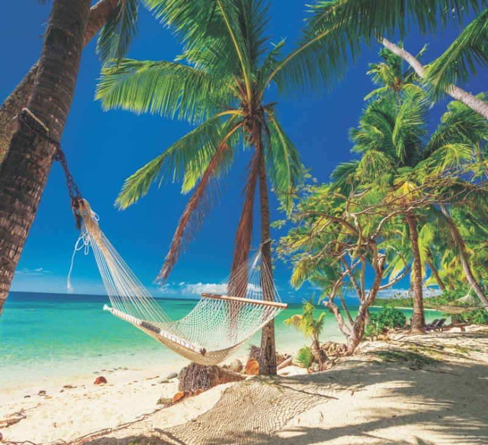

<!DOCTYPE html>
<html lang="en">
<head>
    <meta charset="UTF-8">
    <meta name="viewport" content="width=device-width, initial-scale=1.0">
    <title>Imagens</title>
</head>
<body>
    <!--
         - (IMaGe) imagem

        src - (SouRCe) fonte/origem

        Principais tipos de imagem

        -> png, jpg, jpeg, gif
    -->
    <!--
    <p style="background-color: beige;">
            
    </p>
    -->
    <!--
        - Caminhos
        ../ - Volta um nivel relativo aonde voce esta

        ../../ - Volta dois niveis relativos aonde voce esta

        / - Volta para a pasta raiz de seu projeto
        
    -->
    <!--Caminho relativo
        
    -->
    
    <!--Caminho abosoluto-->
    
</body>
</html>